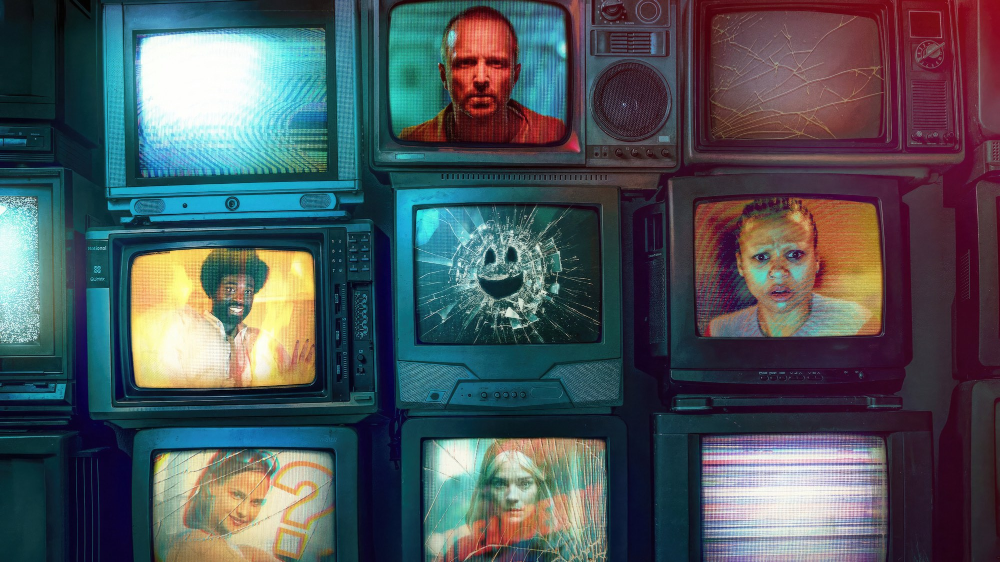
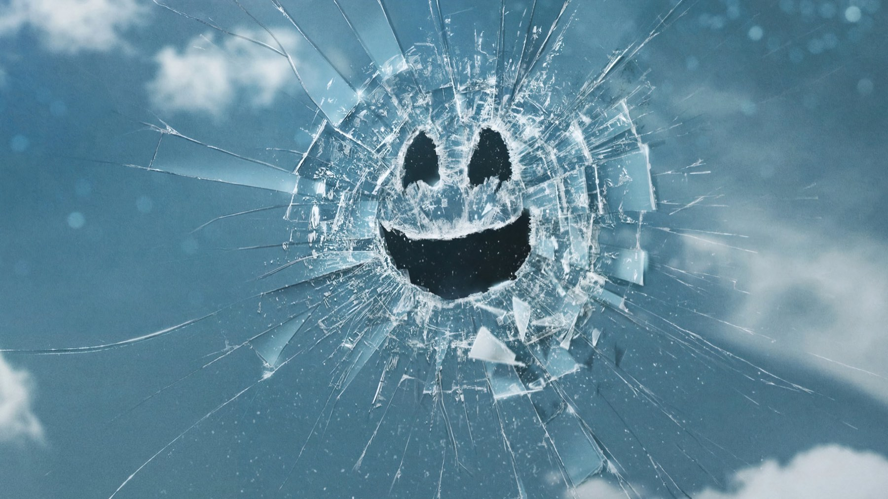
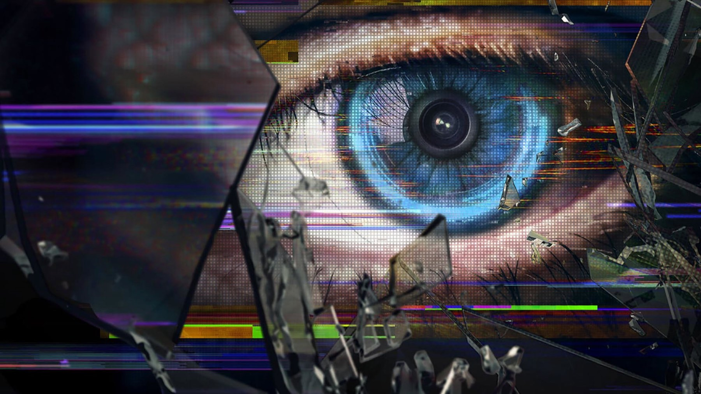

Black Mirror – Stagione 7
Sei episodi, una sola penna e il primo seguito della storia della serie: la stagione che prova a rimettere in moto l'antologia dopo quasi due anni di pausa
Dal 15 giugno 2023, giorno in cui è uscita la sesta stagione, al 10 aprile 2025 sono passati quasi due anni. Per una serie che era nata il 4 dicembre 2011 su Channel 4 e che conta sette stagioni e 33 episodi, è un'attesa lunga. E il ritorno ha una particolarità che i fan aspettavano da tempo: per la prima volta Black Mirror dà un seguito a una sua storia.
La settima stagione è su Netflix dal 10 aprile 2025, tutta insieme, con sei episodi. Qui sotto trovate come la leggiamo noi: dove regge, dove no, e per chi vale la pena.
Cosa c'è dentro la stagione
Gli episodi sono Common People, Bête Noire, Hotel Reverie, Plaything, Eulogy e USS Callister: Into Infinity. Su di loro non diremo nulla della trama, perché in una serie così la sorpresa fa parte del prezzo del biglietto. Si possono però dire cose utili sulla loro costruzione.
Charlie Brooker figura come sceneggiatore di tutti e sei gli episodi, in alcuni insieme ad altri autori: Bisha K. Ali per Common People, Ella Road per Eulogy, mentre il sesto ha quattro nomi in copertina, con Ali, William Bridges e Bekka Bowling. A dirigerli sono invece mani diverse: Ally Pankiw, Toby Haynes, Haolu Wang, David Slade, la coppia Chris Barrett e Luke Taylor.

Il cast, tra volti nuovi e ritorni
Il 19 settembre 2024 Netflix ha annunciato i primi nomi del cast, tra cui Awkwafina, Issa Rae e Paul Giamatti, a cui si aggiungono Rashida Jones, Chris O'Dowd, Emma Corrin e Peter Capaldi: attori molto diversi tra loro. Accanto a loro tornano facce già note al pubblico della serie: Billy Magnussen, che riprende il suo ruolo da USS Callister, e poi Cristin Milioti, Jimmi Simpson e Jesse Plemons.
Qui sta una delle scelte più riuscite della stagione. Un'antologia vive di attori che in quaranta o sessanta minuti devono farci credere a un mondo nuovo. Mettere insieme comici, interpreti da dramma e volti da grande franchise dà a ogni episodio un colore diverso già prima che arrivi la trama.
Il seguito che nessuno si aspettava
USS Callister: Into Infinity, che chiude la stagione, è la prima storia della serie a ricevere un seguito. Non nasce all'ultimo momento: il regista Toby Haynes aveva espresso interesse per uno spin-off televisivo già nel 2017, e lo stesso Haynes dirige anche Bête Noire, il secondo episodio. Il risultato è che Haynes firma sia il secondo sia l'ultimo episodio, mentre gli altri quattro hanno ciascuno un regista diverso.
Per noi è una mossa interessante e rischiosa. Interessante perché dimostra che Black Mirror si fida dei propri personaggi; rischiosa perché una serie nata per cambiare mondo a ogni puntata si mette a ripetere sé stessa. Il consiglio, per chi non l'ha mai visto, è di recuperare prima l'episodio originale: la chiusura funziona meglio così.

Dove la stagione convince e dove no
La nostra posizione è questa: la settima stagione funziona meglio come raccolta di sei film brevi che come stagione compatta. La varietà di registi garantisce sei sguardi, sei ritmi, sei modi di usare la stessa idea di fondo, ovvero che la tecnologia è uno specchio nero in cui ci guardiamo.
Il limite, sempre per noi, sta nell'altra metà del patto. Con una sola penna a firmare tutto, il tono rischia di somigliarsi da un episodio all'altro, e chi guarda di seguito più puntate può avere la sensazione di sentire la stessa voce con costumi diversi. Non è un difetto grave. È la differenza tra una stagione che sorprende sempre e una che sorprende spesso.
Come è stata accolta
I numeri aiutano a capire il clima. A ottobre 2026 Rotten Tomatoes riporta per la stagione l'85% di giudizi positivi su 107 recensioni. Per una serie arrivata alla settima stagione, e con un'attesa lunga alle spalle, è un risultato che dice che il pubblico critico ha considerato il ritorno riuscito.
C'è poi un dato che cambia la lettura di tutto quello che segue. Nel luglio 2025, tre mesi dopo l'uscita, Brooker e la produttrice Annabel Jones hanno annunciato l'addio a Broke & Bones, la loro società, a chiusura del contratto quinquennale firmato con Netflix nel 2020. Questo non toglie niente alla stagione, ma la fa leggere come il capitolo conclusivo di un'epoca produttiva.
A chi la consigliamo
A chi ha lasciato la serie dopo la sesta stagione e vuole capire se vale la pena tornare: sì, e conviene farlo un episodio alla volta, senza maratone. A chi non ha mai visto Black Mirror consigliamo di partire dalle stagioni precedenti e di arrivare a questa quando si vuole il seguito di USS Callister. A chi cerca un'unica storia lunga da seguire, la settima stagione darà meno di quanto si aspetta.
Tutti gli episodi, e tutte le stagioni precedenti, sono su Netflix. Se avete poco tempo, la nostra regola pratica è semplice: un episodio a sera, con una pausa di un giorno prima del successivo. Una serie costruita su idee così compatte rende meglio quando ognuna ha il tempo di lasciare il segno, e la differenza di regia tra un episodio e l'altro si nota di più.
Chi ama l'antologia in senso stretto troverà qui una buona scusa per riscoprire anche le stagioni passate: la settima non richiede di aver visto tutto, ma ripaga chi conosce già l'universo della serie.
La settima stagione di Black Mirror è un ritorno solido e vario, con il merito di aver dato il primo seguito della sua storia e un cast tra i più ricchi della serie. Il tono, però, si somiglia più di quanto la varietà di registi lasci sperare. Da vedere un episodio alla volta, senza fretta, e dopo aver recuperato USS Callister.
Domande frequenti
Quando è uscita la settima stagione di Black Mirror?
Il 10 aprile 2025 su Netflix, con tutti e sei gli episodi disponibili lo stesso giorno.
Quanti episodi ha la stagione 7 di Black Mirror?
Sei: Common People, Bête Noire, Hotel Reverie, Plaything, Eulogy e USS Callister: Into Infinity.
Bisogna aver visto USS Callister per capire il sesto episodio?
Il sesto episodio è il seguito di USS Callister, la prima storia di Black Mirror a ricevere un seguito. Recuperare l'originale prima rende la visione più completa.
Dove si vede Black Mirror in Italia?
Su Netflix, dove sono disponibili tutte le stagioni.